작성자: 배성환
지난 4월 22일부터 24일까지, 여수 베네치아 호텔에서 열린 2026 대한기계학회 바이오공학부문 춘계학술대회에 우리 연구실이 다녀왔습니다.
대한기계학회 바이오공학부문은 인체 생체역학, 재활공학, 의료기기 등 기계공학과 생명과학이 만나는 다양한 연구를 다루는 학술 모임입니다. 매년 봄과 가을에 학술대회가 열리며, 국내외 연구자들이 모여 최신 연구 동향을 공유하는 자리입니다. 학회장이 생각보다 커서 긴장했던 게 기억에 남습니다. 이번 학회에는 교수님과 함께 이강우, 조권승, 차명주, 문선웅, 류형석, 성지윤, 배성환, 박수영 학생이 참석했습니다.
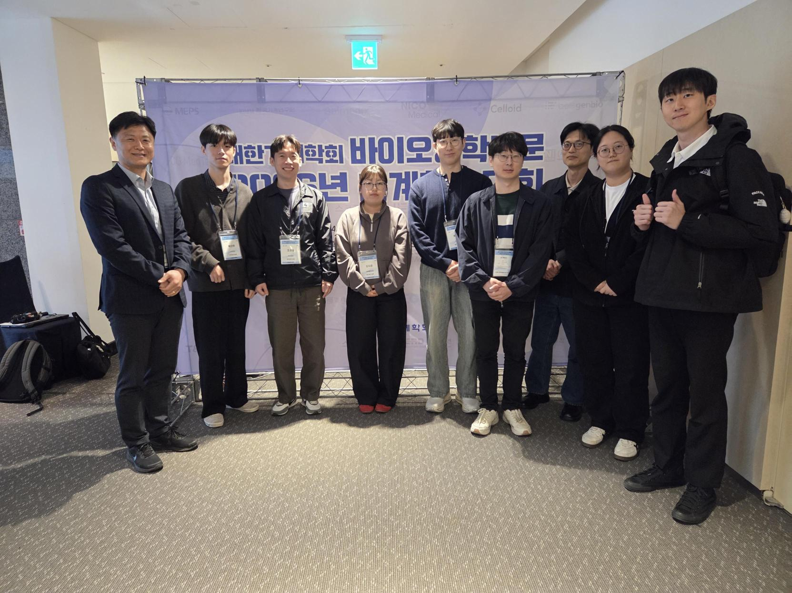
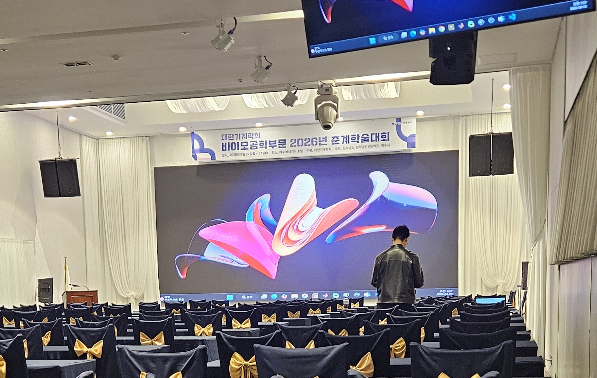
학회 전날 저녁, 다 같이 모여 발표 연습을 진행했습니다. 서로의 발표를 들어주고 피드백을 주고받으며 내일을 준비했는데요, "내일 다들 좋은 결과 있었으면 좋겠다"는 마음으로 늦게까지 연습이 이어졌습니다.
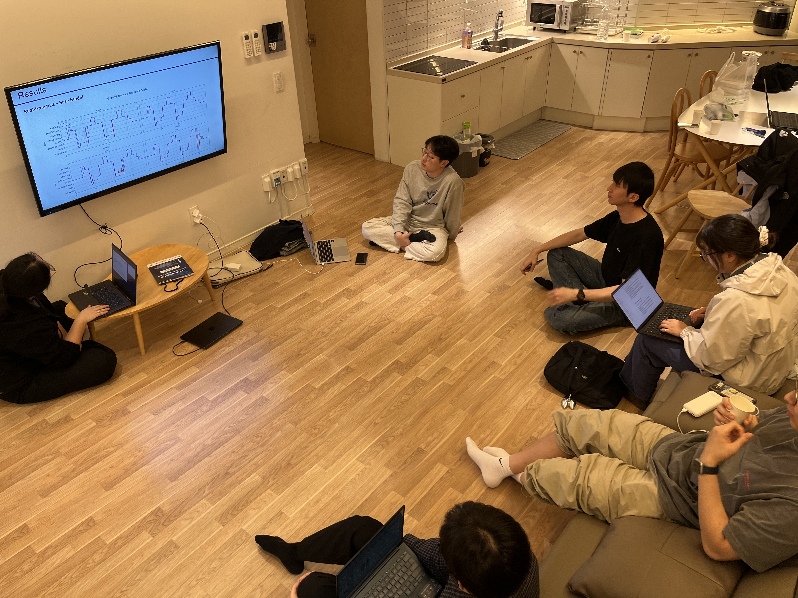
이번 학회에서 우리 연구실은 총 7개의 연구를 발표했습니다.
조권승: pHRI에서의 신뢰 예측: 웨어러블 외골격에서의 뇌졸중 후 환자 신뢰도 분류
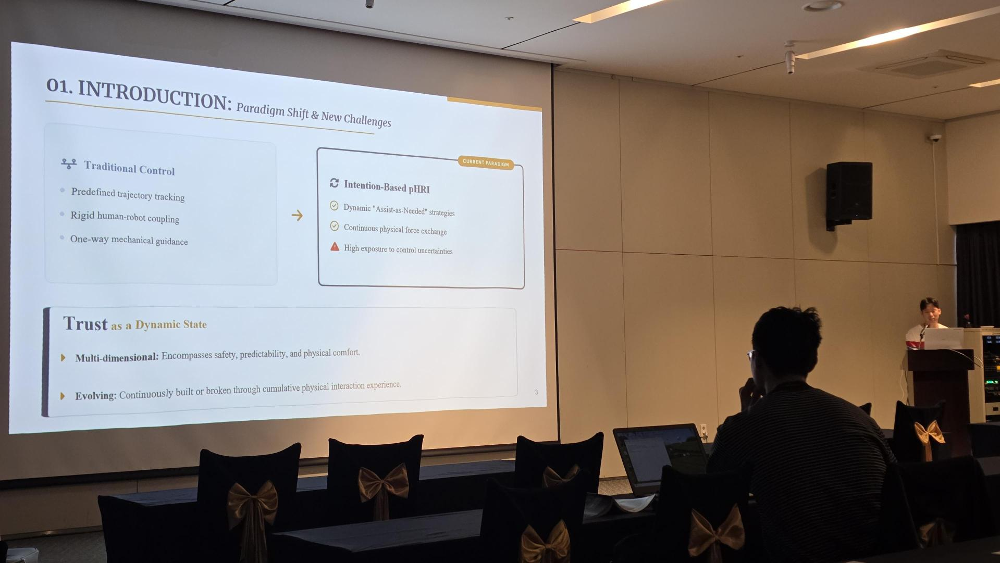
차명주: 커널 기반 보행 위상 및 속도 동시 추정의 다채널 구성 비교 연구
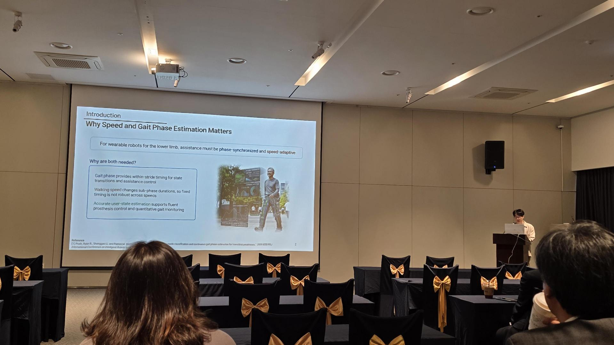
문선웅: DMP 기반 개인 맞춤형 보행 위상 오차 적응형 칼만필터를 통한 보행 위상 변수 추정
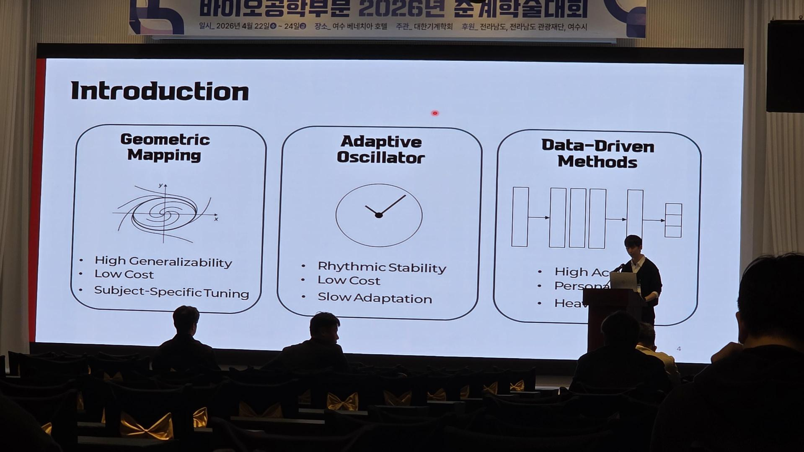
류형석: 신경망 기반 보행 운동학 분석을 이용한 뇌졸중 후 보행의 연속적 표현과 분석
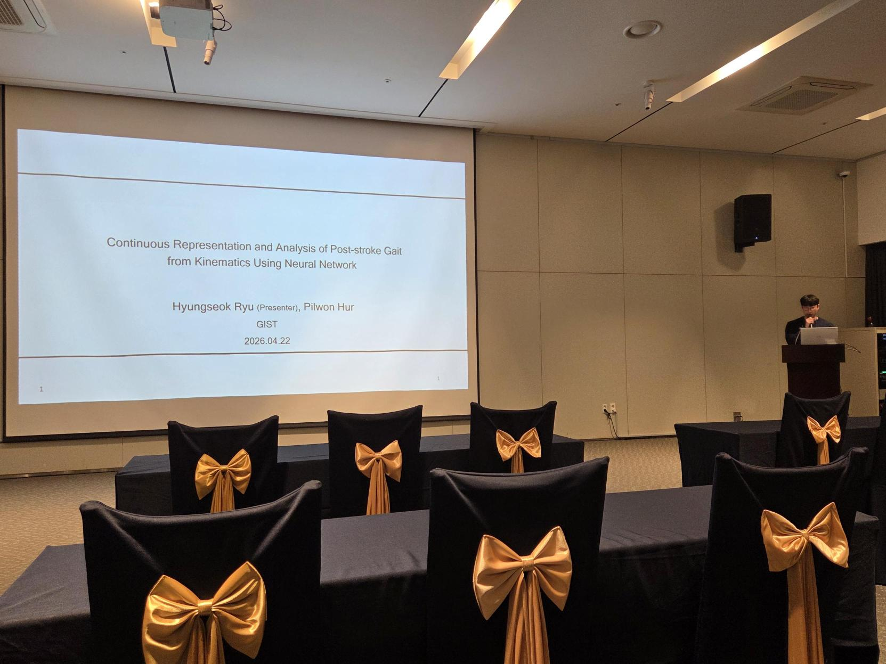
성지윤: 작은 외란에 대한 인간 균형 제어 전략 분석
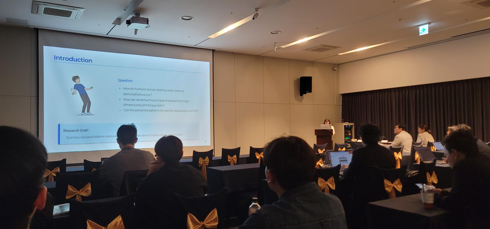
배성환: 강건한 근육 시너지 추출을 위한 엔트로피 기반 후처리 NMF — 해집합 내 대표적 해 선택
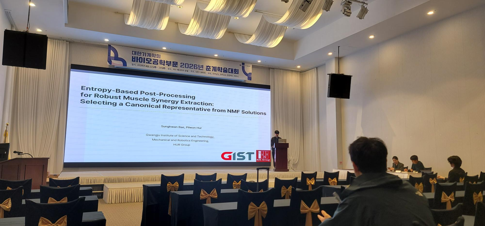
박수영: Dual IMU와 Heel-strike 감지를 갖춘 머신러닝 모델을 사용한 강인한 개인 맞춤형 이동 분류
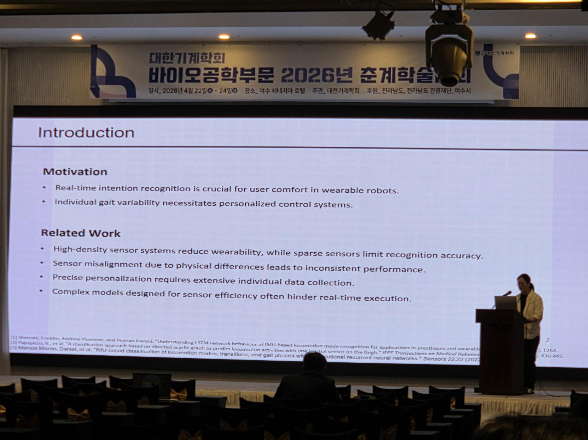
특히 문선웅 학생은 2026년 연구 우수상에 선정되어, 시상식이 있는 2027년 학회에 다시 참석할 예정입니다. 축하합니다! 🎉
이번 학회에서 교수님께서는 한일교수 세션에서 "Motor Control of Human Walking"을 주제로 강연하셨습니다. 인간 보행의 모터 컨트롤을 어떻게 해석하고 공학적으로 구현할 수 있을지에 대한 통찰을 담은 강연으로, 관련 분야에 관심 있는 학생들에게 특히 의미 있는 시간이었을 것 같습니다.
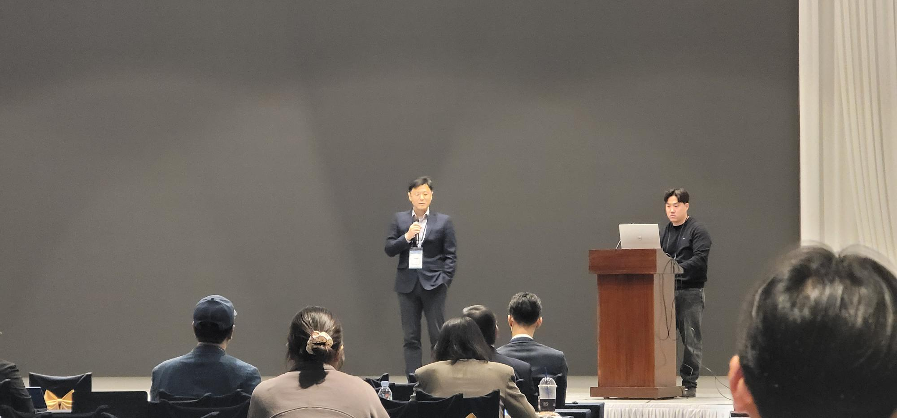
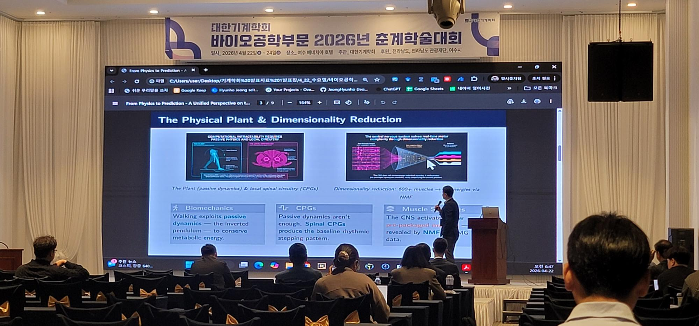
이강우 박사님이 작년에 발표하신 포스터 "Localized Morphological Differentiation of Foot Disorders via Statistical Shape Modeling"이 올해 우수논문상을 받게 되었다는 반가운 소식이 전해졌습니다. 다시 한번 축하드립니다.
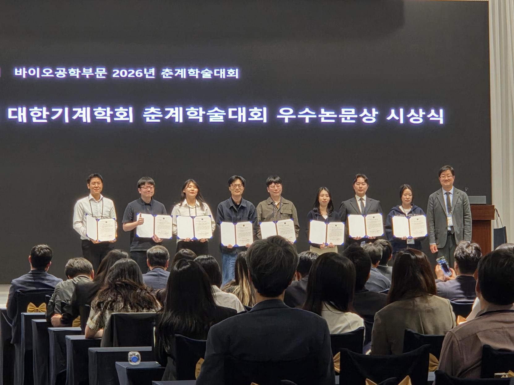
우리 연구실에서 오래전 부터 계획했던 AI Workshop 이 바이오공학회 기간과 겹치면서 AI Workshop 을 여수에서 진행하게 되었습니다. 학회에 참석한 학생들을 포함하여 20명의 연구실 사람들이 AI Workshop 에 참여를 하였습니다. 학회 2일차인 목요일 저녁 8시부터 교수님께서 워크샵을 진행하셨고, AI 활용에 대한 지식과 깊은 인사이트를 얻을 수 있었습니다. 밤 12시가 다 되어서 마쳤습니다. 자세한 내용은 아래의 블로그를 참고해주세요.
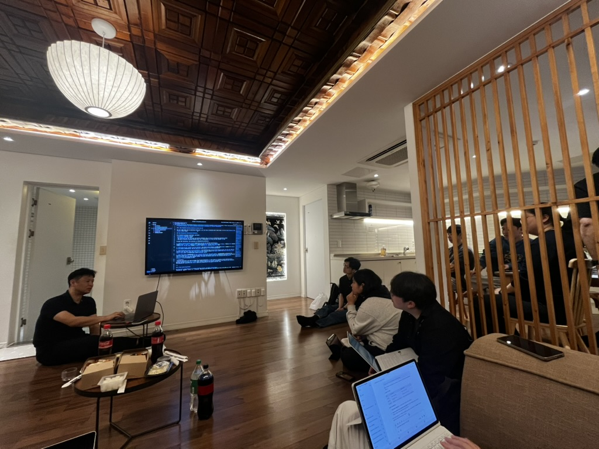
목요일과 금요일 아침 7시 10분에 베네치아 호텔 앞에서 오동도를 왕복하는 5km 달리기가 있었습니다. 바이오공학회에서 주최하는 이벤트로, 다양한 연구자들이 서로 자연스럽게 이야기할 수 있는 기회였습니다. 또한 중간 기점에 3만원짜리 스타벅스 카드를 상품으로 주었습니다. 우리 연구실에서는 교수님, 이강우 박사님, 성지윤 학생이 참여하였습니다. 많은 학생들이 참여하려고 하였으나, 그 전날 밤에 무리를 하였나 봅니다.
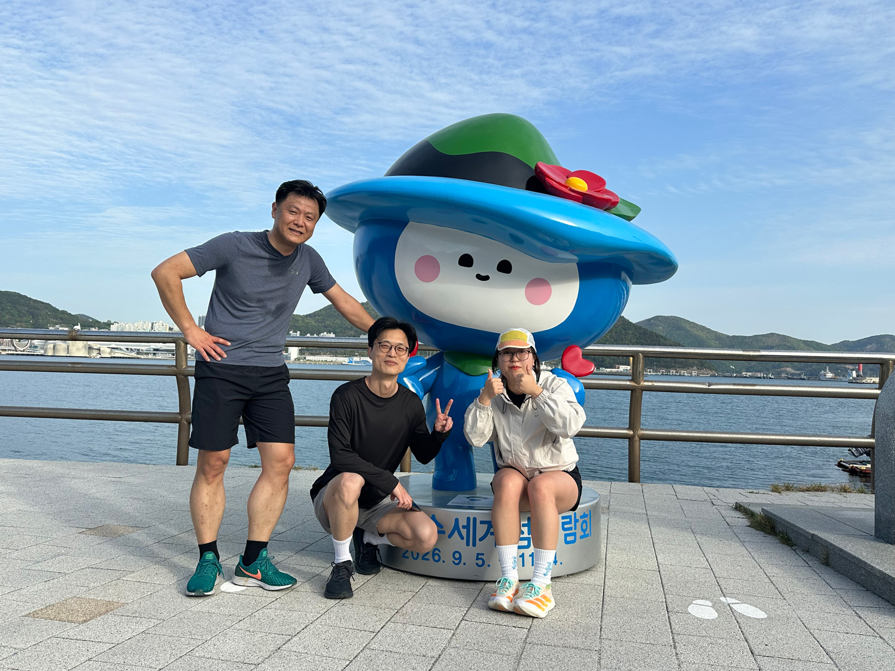
여수의 좋은 풍경 속에서, 평소 연구하던 내용을 발표하고 다른 연구자들의 최신 동향도 듣고, 좋은 소식까지 더해진 알찬 3일이었습니다. 이번 학회에서 얻은 자극과 영감을 바탕으로 앞으로의 연구도 한 단계 더 나아갈 수 있길 기대합니다.
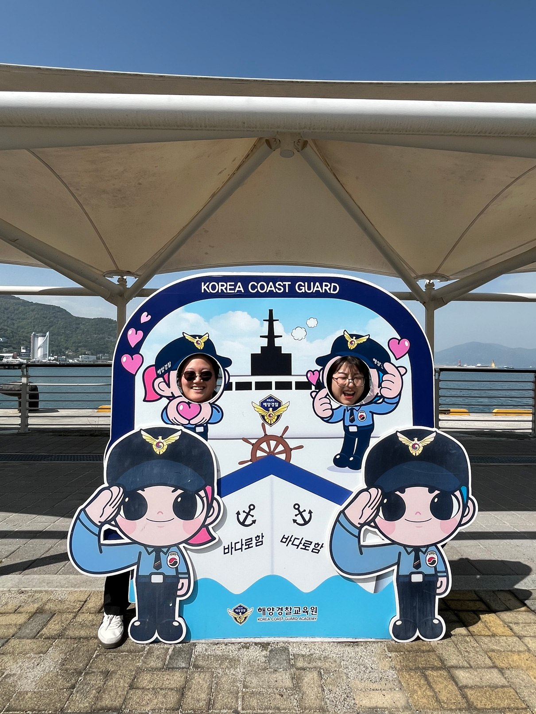